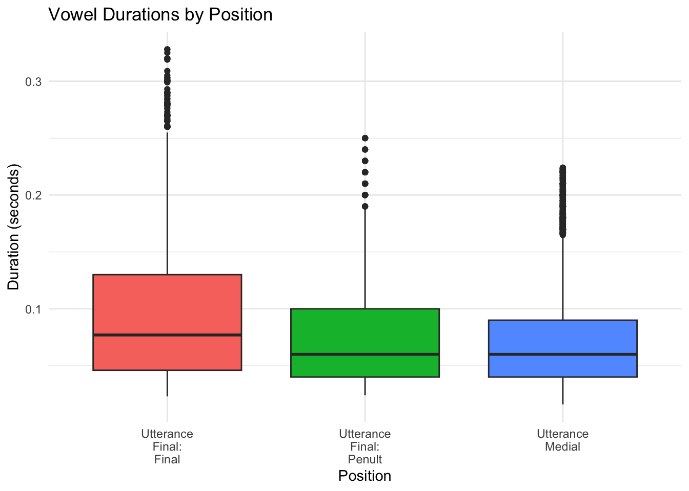
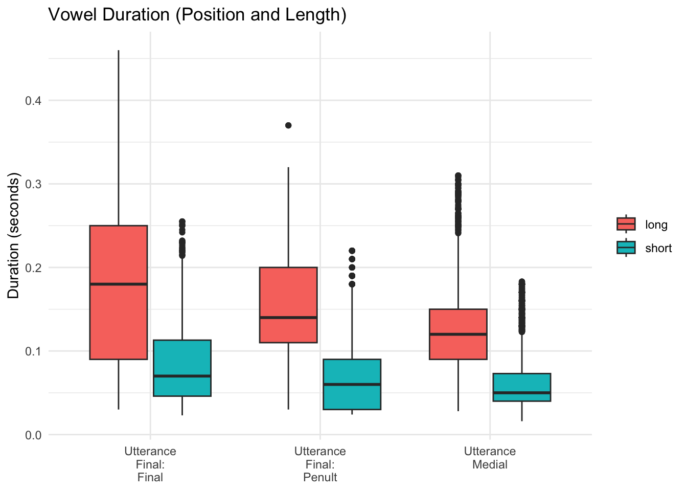

# If you do not already have the following packages installed, you will need to install them now. Note that we have added the package ggtext
# install.packages("phonfieldwork")
# install.packages("tidyverse")
# install.packages("here")
# install.packages("ggtext")
# Load required packages for ELAN file processing
library(phonfieldwork)
# Load for data wrangling
library(tidyverse)
# Load for consistent file paths
library(here)
# Load for markdown text formatting in plots
library(ggtext)
# Define corpus directory
corpus_dir <- here("doreco_teop1238_core_v2.0")Measuring vowels in different positions of the word and utterance (CA2)
In this portion of Collaborative Assignment 2, you will use the DoReCo corpus your group has selected to measure vowel duration in words in utterance-final position (both penultimate and final syllables) and words in “utterance-medial positions” (i.e. non-final utterance positions). We will then compare the vowel durations in these positions.
NoteSummary
The code below performs the following analysis:
- Import and prepare corpus data: Loads all ELAN files from the corpus, filters to phone-level annotations, and creates unique identifiers for references
refand wordswd- References will represent utterances
- Define vowel categories: Specifies which phone symbols represent vowels in the corpus
- Additional vowel categories or distinctions may be included in this section.
- Identify utterance positions: Separates words into utterance-final (last word in each utterance) and utterance-medial (all other words)
- Filter out monosyllabic words: For utterance-final analysis, keeps only words with two or more vowels to enable comparison between penultimate and final syllables
- Measure vowel durations: Calculates the duration of vowels in three positions:
- Final syllable in utterance-final words
- Penultimate syllable in utterance-final words
- Final and penultimate syllables in utterance-medial words (excluding those after pauses)
- Visualize patterns: Creates boxplots comparing vowel durations across positions, examining whether vowels are longer at utterance boundaries (final lengthening) and whether this differs between short and long vowels
Preliminaries
As usual, make sure you have the packages installed. Load the libraries, and define the corpus directory.
Caution
We have tried to create code that applies broadly to the DoReCo corpora. However, it was not possible to test this code on each individual DoReCo corpus, so there is a chance you may not be able to produce the desired output. If you encounter issues that you are not able to fix, we will try to help you adjust the code.
Import the corpus and add ref_id and word_id
Import the corpus, grouping utterances together with ref_id and words together with word_id.
# Find all ELAN files in the corpus directory
corpus_files <- list.files(corpus_dir,
pattern = "\\.eaf$",
full.names = TRUE)
# Read all ELAN files into a single dataframe
corpus <- corpus_files |>
map(eaf_to_df) |>
list_rbind(names_to = "file")
# Filter the corpus for core morphosyntactic tier types
corpus_df <- corpus |>
filter(tier_type %in% c("ref", "tx", "ft", "wd", "mb", "gl", "ph")) |>
mutate(
# Grouping the reference tier together, which allows us to investigate utterances
ref_id = paste0("ref", str_pad(cumsum(tier_type == "ref"), width = 4, pad = "0")),
# Grouping words together
word_id = if_else(tier_type %in% c("ref", "tx", "ft"),
NA_character_,
paste0("w", str_pad(cumsum(tier_type == "wd"), width = 5, pad = "0")))
)Explore the phones in the corpus, define the vowels
Create a list of the unique phones in the corpus. Find the vowels and define a vowels variable.
# List each phone on the ph tier
phones <- corpus |>
filter(tier_type == "ph") |>
filter(!str_detect(content, "<")) |>
distinct(content)
# Define the vowels
vowels <- c("a", "e", "o", "u", "i", "O:", "i:", "{:", "a:", "e:", "o:", "u:")
# If the language you are working has a length distinction, define short and long vowels as well.
vowels_short <- c("a", "e", "o", "u", "i")
vowels_long <- c("O:", "i:", "{:", "a:", "e:", "o:", "u:")Create dataframes for words in different utterance positions
Create dataframes for words in utterance-final position and utterance-medial position. Keep only words with two or more syllables.
# Filter utterance-final words
utterance_final_words <- corpus_df |>
filter(tier_type == "ph") |>
filter(!str_detect(content, "<")) |>
group_by(ref_id) |>
filter(word_id == max(word_id, na.rm = TRUE)) |>
ungroup()
# Filter utterance-final words with 2+ vowels
utterance_final_words_multi <- utterance_final_words |>
group_by(word_id) |>
filter(sum(content %in% vowels) >= 2) |>
ungroup()
# Filter utterance-medial words
utterance_medial_words <- corpus_df |>
filter(tier_type == "ph") |>
filter(!str_detect(content, "<<")) |>
group_by(ref_id) |>
filter(word_id != max(word_id, na.rm = TRUE)) |>
ungroup()Measure vowel duration of different syllables and words
Measure the vowel durations of penultimate and final syllables in words in utterance-final position and store separately. Measure all vowels in words in utterance-medial position except vowels that occur immediately after a pause.
# Measure duration of final vowels in utterance-final position
utterance_final_vowels_duration <- utterance_final_words_multi |>
filter(content %in% vowels) |>
arrange(word_id, time_start) |>
group_by(word_id) |>
slice_tail(n = 1) |>
ungroup() |>
mutate(duration = time_end - time_start)
# Measure duration of penultimate vowels in utterance-final position
utterance_final_penult_duration <- utterance_final_words_multi |>
filter(content %in% vowels) |>
arrange(word_id, time_start) |>
group_by(word_id) |>
slice_tail(n = 2) |>
slice_head(n = 1) |>
ungroup() |>
mutate(duration = time_end - time_start)
# Measure duration of final vowels in utterance-medial position (excluding vowels after pauses to avoid strengthening effects)
utterance_medial_vowels_duration <- utterance_medial_words |>
filter(content %in% vowels) |>
arrange(ref_id, time_start) |>
mutate(prev_content = lag(content),
follows_pause = prev_content == "<p:>") |>
filter(!follows_pause | is.na(follows_pause)) |>
group_by(word_id) |>
slice_tail(n = 2) |>
ungroup() |>
mutate(duration = time_end - time_start)Plot vowel duration
Plot the vowel durations.
# Plot comparing vowel durations by position
# Combine all groups with position labels
vowel_duration_comparison <- bind_rows(
utterance_final_vowels_duration |> mutate(position = "Utterance\nFinal:\nFinal"),
utterance_final_penult_duration |> mutate(position = "Utterance\nFinal:\nPenult"),
utterance_medial_vowels_duration |> mutate(position = "Utterance\nMedial")
)
# Plot comparing vowel durations by position (all vowels combined)
vowel_duration_comparison |>
group_by(position) |>
filter(duration <= mean(duration) + 3 * sd(duration)) |>
ungroup() |>
ggplot(aes(x = position, y = duration, fill = position)) +
geom_boxplot() +
labs(x = "Position",
y = "Duration (seconds)",
title = "Vowel Durations by Position") +
theme_minimal() +
theme(legend.position = "none")
Bonus: Plot vowel duration accounting for vowel length
# Add vowel length category using predefined vowel lists
vowel_duration_comparison_length <- vowel_duration_comparison |>
mutate(vowel_length = case_when(
content %in% vowels_long ~ "long",
content %in% vowels_short ~ "short",
TRUE ~ NA_character_
)) |>
group_by(position, vowel_length) |>
filter(duration <= mean(duration) + 3 * sd(duration)) |>
ungroup()
# Plot comparing vowel durations by length
vowel_duration_comparison_length |>
ggplot(aes(x = position, y = duration, fill = vowel_length)) +
geom_boxplot() +
labs(x = NULL,
y = "Duration (seconds)",
title = "Vowel Duration (Position and Length)",
fill = NULL) +
theme_minimal()